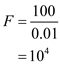
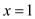
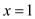

Write the expression for closed-loop nominal gain of non-inverting amplifier.
Open-loop gain of the op-amp is  .
.
Refer to equation (2.11) in the textbook.
Determine the overall gain of the amplifier.
Substitute  for
for  in the equation.
in the equation.
…… (1)
Write the expression for closed-loop nominal gain of non-inverting amplifier.
Open-loop gain of the op-amp is .
Refer to equation (2.11) in the textbook.
Determine the overall gain of the amplifier.
Substitute for in the equation.
…… (1)
Consider the reduction in the closed-loop gain  from the nominal value
from the nominal value  is to be kept less than of
is to be kept less than of  .
.
Write the condition.
Simplify further,
…… (2)
Consider .
Substitute  for in equation (2).
for in equation (2).
Therefore, the open-loop of the op-amp is exceed  by .
by .
Consider, for  , determine the value of
, determine the value of  .
.

Therefore, the value of  for
for  is
is  .
.
For  , determine the value of
, determine the value of  .
.
Therefore, the value of  for
for  is .
is .
For  , determine the value of
, determine the value of  .
.
Therefore, the value of  for  is .
for  is .
 , determine the value of
, determine the value of  .
.
Therefore, the value of  for is
for is  .
.
Consider the values of closed loop gains .
Write the expression for open-loop gain.
.
For , determine the value of open-loop gain.
For  , determine the value of open-loop gain.
, determine the value of open-loop gain.
For  , determine the value of open-loop gain.
, determine the value of open-loop gain.
For  , determine the value of open-loop gain.
, determine the value of open-loop gain.